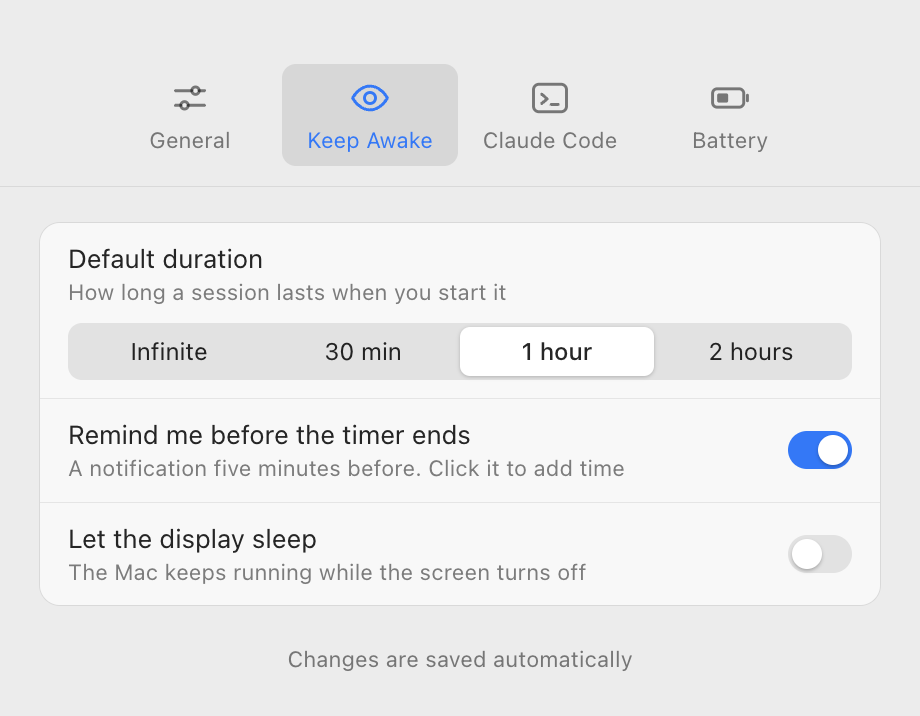
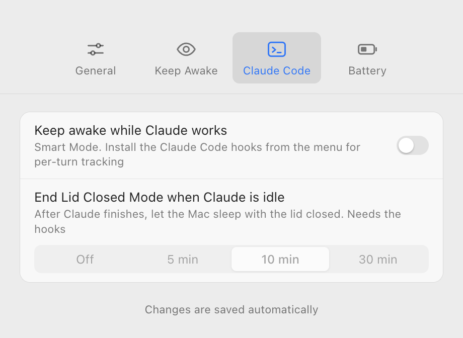
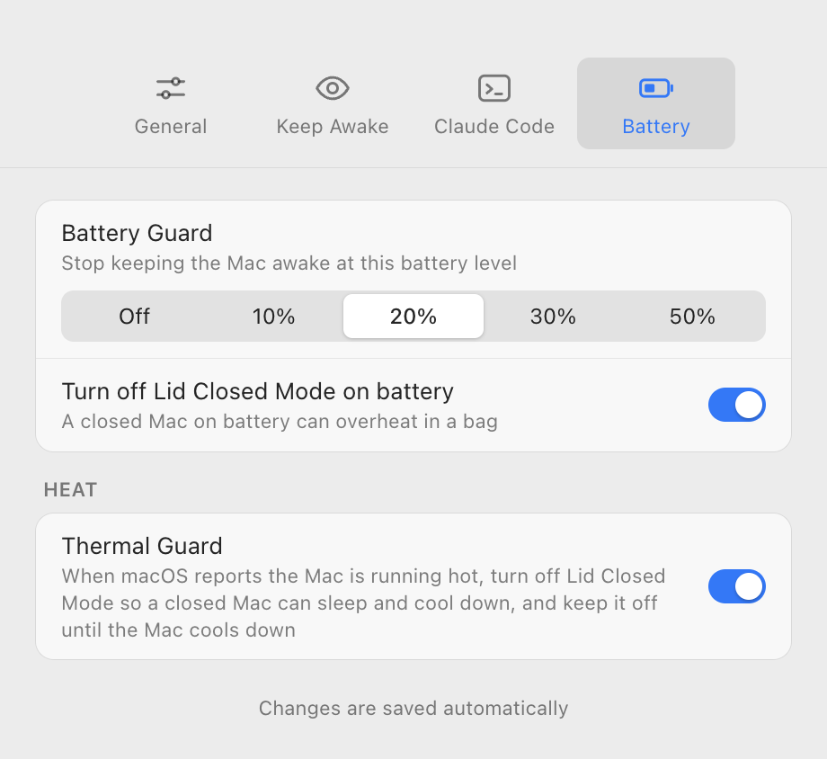
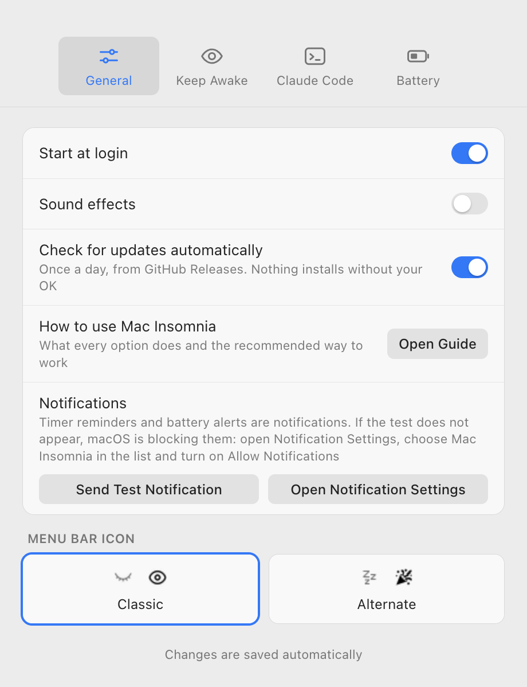

Welcome to Mac Insomnia
Keeps your Mac awake while it matters, and lets it sleep when nothing is going on. It lives in the menu bar and stays out of the way.
The basics
Sessions & Timer
A session keeps the Mac awake for a set time. Start it from the menu or with a right-click on the icon.
- Set Duration picks 30 minutes, 1 hour, 2 hours or Infinite. Settings → Keep Awake sets the default.
- Five minutes before the end you get a reminder. Click it and choose Add 30 Minutes to keep going.
- Let the Display Sleep keeps the Mac running but turns the screen off. Good for downloads, builds and long Claude runs.

Wait for a job
Keep Awake Until a Process Ends
Stay awake exactly as long as a build, a render, an export or a download runs. When it finishes, you get a notification and the Mac can sleep again.
- Open Keep Awake Until a Process Ends. It lists the apps and tools that are busy right now, with their CPU use.
- Pick the one to wait for. The menu then shows Stop Waiting for … to cancel.
From Terminal
Run the command in the background and hand its process id to Insomnia:
npm run build & open -g "mac-insomnia://until?pid=$!"Stop it with kill %1 rather than Ctrl-C. A wait is separate from the session: Stop Insomnia leaves it running.
For Claude Code
Smart Mode
Keeps the Mac awake while Claude Code is working on a turn, and lets it sleep as soon as Claude is idle. No timer to set.
The recommended way to work
- Install the hooks once (above). Restart Claude Code sessions that are already open so they pick them up.
- Turn on Smart Mode and leave it on. The Mac stays awake through every turn, in every session, then sleeps.
- Skip the infinite session. Smart Mode already covers Claude. Start a timer only when you want the Mac awake without Claude too.
- Long background command? The hold ends when Claude finishes its turn, even if a command still runs. Add a timer or a process wait for it.
To undo, Remove Claude Code Hooks… in the menu removes only these hooks and keeps the others.

Close the lid, keep working
Lid Closed Mode
macOS always sleeps when you close the lid. Keep Awake with Lid Closed turns that off system-wide after an administrator password, so a job or a Claude run continues with the lid shut.
Let Claude work with the lid closed
- Connect power and start Claude on the task.
- Choose Keep Awake with Lid Closed and enter the password.
- Close the lid. When Claude has finished and stayed idle for 10 minutes (Settings → Claude Code), the mode turns itself off and the Mac sleeps.
- Normal sleep comes back when you turn the mode off, when the timer ends, when you quit, and even after a crash or a force quit.
- The mode is never on when the app starts, and updates wait until it is off.
Protect the battery and the Mac
Battery & Heat
Battery Guard
When the battery drops to the level you choose (20% by default), Insomnia stops everything that keeps the Mac awake: the session, Lid Closed Mode and Smart Mode holds. A notification says so, and Smart Mode resumes when power is back.
- Battery Guard in the menu or Settings → Battery sets the level: 10, 20, 30, 50% or Off.
- Turn Off Lid Closed Mode on Battery (on by default) is the safety net for a closed Mac in a bag.
- The guard only listens to the system while the Mac is on battery and being kept awake, so it costs nothing otherwise.
Thermal Guard
A closed Mac that cannot sleep is the one that overheats. With Thermal Guard on (the default), Insomnia listens to the heat level macOS reports:
- Running hot: Lid Closed Mode turns off, so a closed Mac can sleep and cool down, and it cannot be turned on again until the Mac cools down.
- Lid open: sessions, process waits and Smart Mode keep running. Staying awake does not heat the Mac, the work does, and macOS slows it down on its own.
- It costs nothing: macOS sends the event, Insomnia never polls. Turn it off in Settings → Battery or the Battery Guard menu.

Shortcuts, Raycast, scripts
Automation
Anything that can open a link can control Insomnia. A link also launches the app when it is not running.
mac-insomnia://start?minutes=90 | Start for 90 minutes (1 to 1440) | |
mac-insomnia://start?minutes=infinite | Start with no limit | |
mac-insomnia://stop | Stop | |
mac-insomnia://toggle | Start or stop | |
mac-insomnia://until?pid=1234 | Wait for process 1234 |
- Terminal:
open -g "mac-insomnia://start?minutes=90".-gkeeps your focus where it is. - Shortcuts: an Open URLs action with one of the links.
- Raycast: a Quicklink with one of the links.
Lid Closed Mode cannot be turned on from a link, because it needs the warning and the password.
Stay current
Updates & More
- Updates. Insomnia checks GitHub once a day and asks before installing. The download is checked, the old copy is kept until the new one is in place, and your session and waits continue after the restart. Check for Updates… in the menu checks now.
- Notifications. Reminders, battery alerts and update offers are notifications. If you never see them, test them in Settings → General.
- Start at Login, sound effects and the icon style are in Settings → General.
- Uninstall. Remove the Claude Code hooks from the menu, quit, and delete the app. The README lists the folders it leaves behind.
